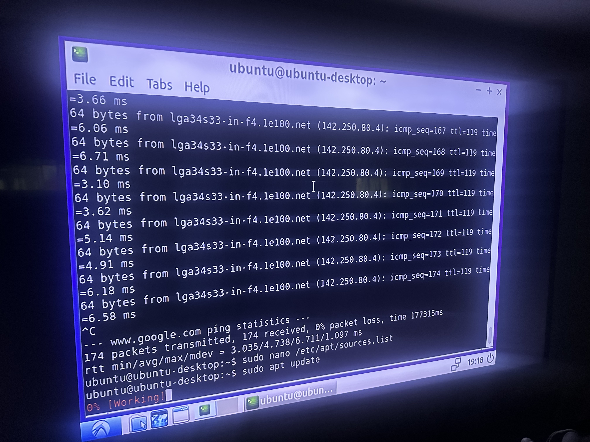

This is the Image File for Ubuntu 16.04 PowerPC and it has been modified to boot on the Nintendo Wii.
The above files are the RootFS files. These files are what will be flashed to a SD card or a Flash Drive.
Ubuntu Server is out of date and does not support the new kernel yet! But the AIO Image runs Lubuntu and is designed to be flashed onto a SD card.
The download below is the download for the BootFS image. This is what you will flash to a SD card when loading Ubuntu Server or from USB.
New BootFS .img Server BootFS .imgUsername - ubuntu
Password - ubuntu
You will see 3 Kernel Choices, by default it boots the stable v4.20 kernel from USB, Older kernels can be compiled and work but are abandonded for this release.
Under the USB option you see the SD card option which is the option used for the AIO Image.
USB Ethernet and WiFi NOW WORK!. Framebuffer support depends on the release you are using. Newest kernel supports Wii GPU Framebuffer. The USB Image currently has the AIO swap in fstap. That can be fixed by changing it to /dev/mmcblk0p3 to mmcblk0p2 if using the USB Only BOOTFS. Here's the github page Wiibuntu 16.04 Github.